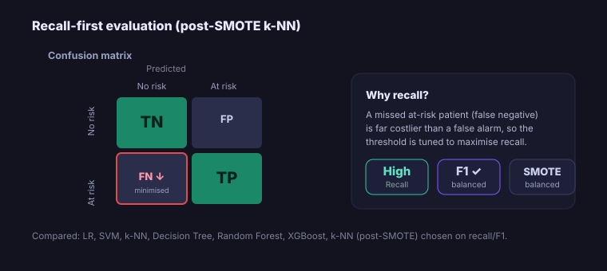

Risk Prediction on Imbalanced Data
A supervised risk-prediction pipeline (heart-attack risk) built the way enterprise risk problems demand, recall-first, because a missed positive is the costliest error. Methodology transfers directly to fraud, churn and credit-risk analytics.

End-to-end lifecycle
- Business Problem
Predict high-risk cases where a missed positive (false negative) carries the highest cost, the core shape of most enterprise risk problems.
- Business Context
A risk-screening scenario on imbalanced data, directly analogous to fraud detection, credit risk and high-value churn.
- Data Sources
A clinical risk dataset with significant class imbalance between positive and negative cases.
- Data Engineering / ETL
Cleaned columns, encoded categoricals, scaled numeric features and fixed potential leakage before modelling.
- Data Modeling
Reproducible stratified 70/15/15 split with fixed seeds; SMOTE oversampling applied only to the training set.
- Analytics & Statistical Analysis
EDA, per-class metrics and confusion matrices, baselined against a majority-class predictor.
- Visualization & Reporting
Confusion matrices and per-model comparisons to make the recall trade-off explicit.
- Machine Learning / AI
Benchmarked LR, SVM, k-NN, Decision Tree, Random Forest & XGBoost with tuning; selected the recall/F1-optimal model (post-SMOTE k-NN).
- Business Impact
Minimised costly false negatives and produced a transferable, recall-first methodology for enterprise risk analytics.
- Lessons Learned
Optimise for the metric that matches the business cost, not raw accuracy; SMOTE plus threshold tuning is a reliable recipe for imbalance.